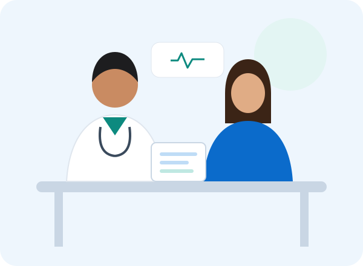

Our Mission
To provide accessible, specialist-led consultation and follow-up care with clear communication and fair pricing.
CareNest Hospital started with a simple idea: patients should be able to meet the right specialist quickly, understand what they pay for, and keep all their records in one place.
We focus on consultations, treatment planning, minor procedures, physiotherapy and emergency transport.We do not conduct laboratory or diagnostic tests in-house. When a doctor recommends a test, patients choose any outside lab, then bring or upload the report. The doctor reviews it during a Report Review / Follow-up Visit, which costs less than a normal consultation.

To provide accessible, specialist-led consultation and follow-up care with clear communication and fair pricing.
A fully connected hospital where every patient can manage appointments, reports and prescriptions online.
Compassion, honesty, privacy of patient information and continuous improvement through patient feedback.